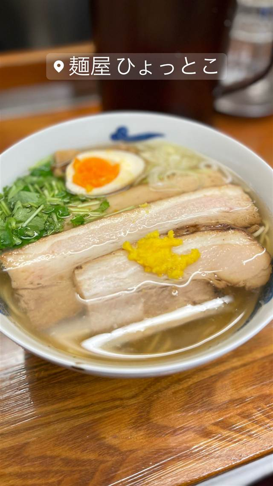
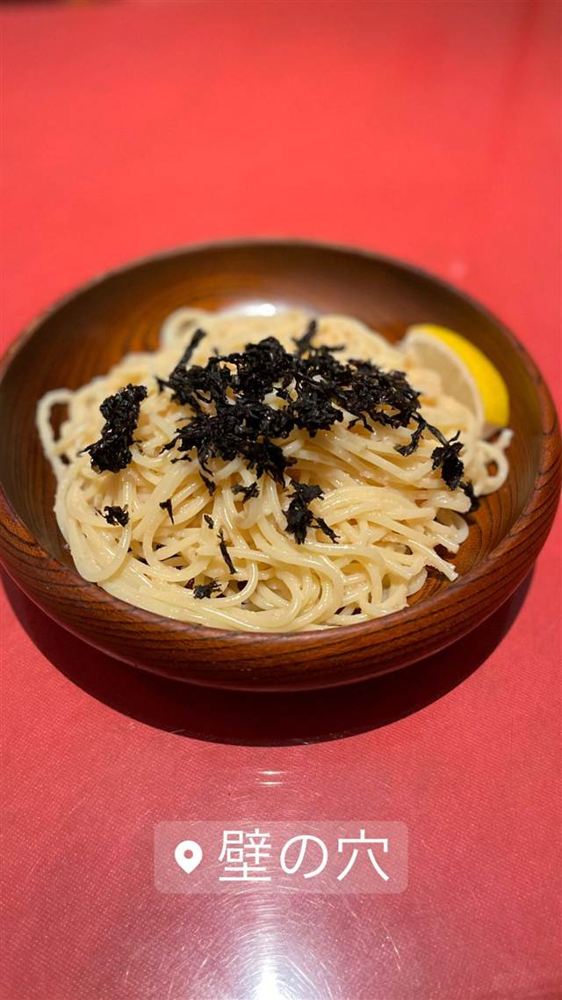
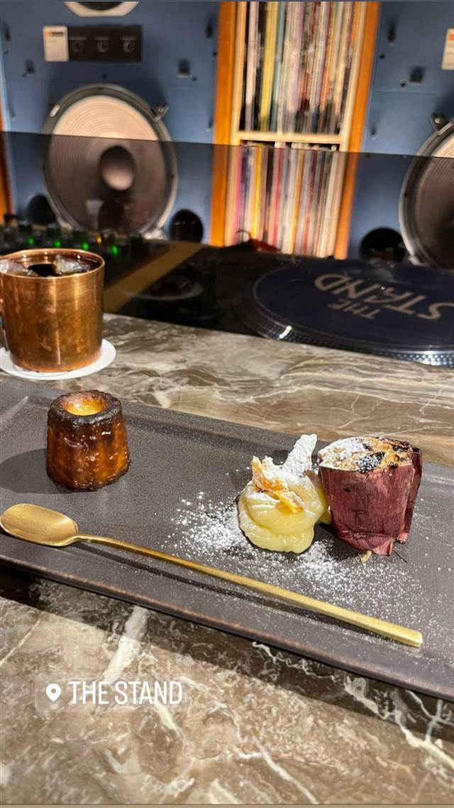
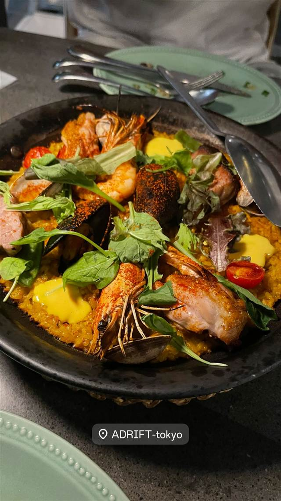

麺屋ひょっとこ 交通会館店
柚子香る鶏と魚介の塩ラーメン、百名店に5年連続選出
麺屋 ひょっとこ
東京交通会館地下、わずか7席ほどの小さな店ながら、鶏と魚介、柚子の香りが上品な塩ラーメンで食べログ百名店に5年連続選出される人気店。1946年創業の甘味処「甘味おかめ」と同じ経営による姉妹店でもある。
TRIVIA
豆知識
- 1946年創業の甘味処「甘味おかめ」と経営が同じ姉妹店
- 2018年に銀座へ系列店を出したが現在は閉店している
REVIEWS
世間の評判
94.4ラーメンDB3.76食べログ
淡麗な塩スープと大盛の割高感
- 淡麗で線が細く上品な塩味のスープを美味しいと評価する声が多いようだ
- 柚子を効かせたバージョンの香りが良いアクセントになっているという声がある
- 大盛にすると追加料金が250円と高めに設定されていると感じる人もいる
ラーメンデータベース 口コミ521件・総合452位・最新 2026-08
| 創業 | 2005年開業、東京交通会館地下で営業 |
|---|---|
| 看板 | 柚子の香る塩の柳麺（和風だしスープ） |
| こだわり | 鰹節・昆布・鶏ガラでとった澄んだ和風だしに柚子の香りを効かせた塩スープ |
| 掲載・評価 | 食べログ百名店に5年連続選出 |
| どこから | 都心 |
| 行くなら | 行列 |
| 営業時間 | 月〜金 11:00-20:00 土 11:00-19:00 日 休み |
| 予算 | 昼 ～¥999 夜 ～¥999 |
| 定休日 | 日曜・祝日 |
| 予約 | 予約不可 |
| 場所 | 有楽町 東京都千代田区有楽町2-10-1 東京交通会館B1F |
| メモ | カウンター7席ほどの狭い店内、開店から閉店まで行列が絶えない人気店 |
食べたもの：ラーメン
NEARBY
近い店・同じ系統の店
-
 ★
塩 浅草橋
饗 くろ㐂(もてなし くろき)
料亭やイタリアンの総料理長経験を持つ店主の塩そば
昼 ¥1,000～¥1,999 夜 ¥1,000～¥1,999
★
塩 浅草橋
饗 くろ㐂(もてなし くろき)
料亭やイタリアンの総料理長経験を持つ店主の塩そば
昼 ¥1,000～¥1,999 夜 ¥1,000～¥1,999
-

パスタ 有楽町／日比谷 壁の穴 日比谷シャンテ店 キャビアの代わりに使ったたらこが名物になった元祖たらこスパゲッティ 夜 ¥1,000～¥1,999 -
 ベトナム 有楽町
Ya Kun Kaya Toast 東京国際フォーラム店
1944年シンガポール創業の自家製カヤジャムトースト
昼 ～¥999 夜 ～¥999
ベトナム 有楽町
Ya Kun Kaya Toast 東京国際フォーラム店
1944年シンガポール創業の自家製カヤジャムトースト
昼 ～¥999 夜 ～¥999
-
 ドイツ 日比谷
ドイツ居酒屋 JSレネップ
1978年創業、ドイツパンは名古屋の名店に特注する老舗居酒屋
昼 ¥1,000～¥1,999 夜 ¥3,000～¥3,999
ドイツ 日比谷
ドイツ居酒屋 JSレネップ
1978年創業、ドイツパンは名古屋の名店に特注する老舗居酒屋
昼 ¥1,000～¥1,999 夜 ¥3,000～¥3,999
-

ケーキ・パフェ 有楽町 THE STAND（ザ スタンド） 銀座のフレンチバル監修、店内手焼きの自家製カヌレ 夜 ¥2,000～¥2,999 -

スペイン料理 二重橋前駅・日比谷駅 ADRIFT by David Myers ミシュラン店出身シェフが仕立てるカリフォルニア風パエリア 昼 ¥1,000～¥1,999 夜 ¥5,000～¥5,999